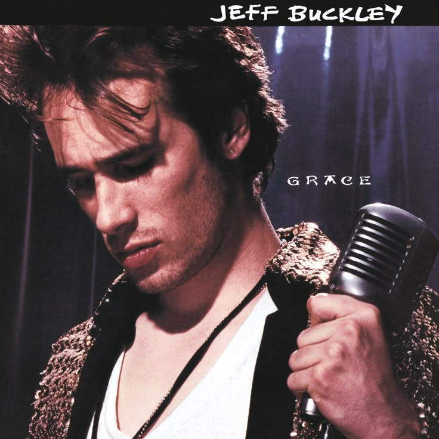
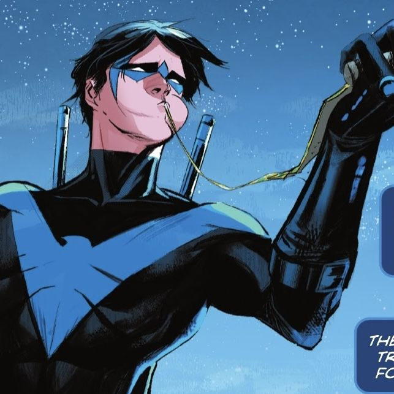

Sobre mi
Hola mi nombre es Carlos Enrique Ávila Olivares, justamente en la fecha que hago esto estoy a 1 día de cumplir 20, actualmente estoy estudiando la carrera de Tecnología de informacion en la Universidad Autónoma de Nuevo León, me gusta aprender cosas nuevas y siempre busco superarme a mi mismo.
Me gustan mucho los autos, la musica, la tecnología, los comics en especial los de DC, me gusta hacer deporte y bueno actualmente me siento muy en paz conmigo mismo y con la persona que soy, y estoy muy agradecido por eso :).

Mi auto favorito
Mi auto favorito es el Porsche 911 en cualquiera de sus variantes, es un auto que me encanta por su diseño y por su historia en el mundo del automovilismo, es un auto que representa mucho para mi y siempre he soñado con tener uno.
Mi musica favorita
Mi artista favorito es jeff Buckley, creo que conecte mucho con sus canciones y sus letras y eso lo hizo un musico muy especial para mi, ademas su historia me parece un mito un artista que con un solo album hizo una obra maestra.
Mi superheroe favorito
Mi superheroe favorito es Nightwing, creo que es un personaje muy complejo y con una historia muy interesante, ademas de que no tiene superpoderes y eso lo hace un personaje muy humano y realista, me gusta mucho su filosofia y su forma de ver el mundo.